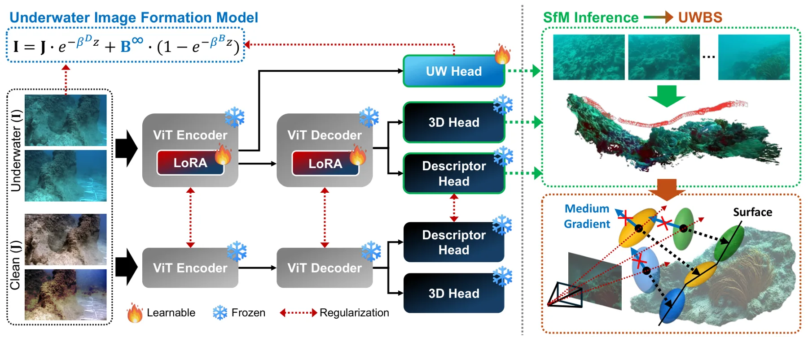
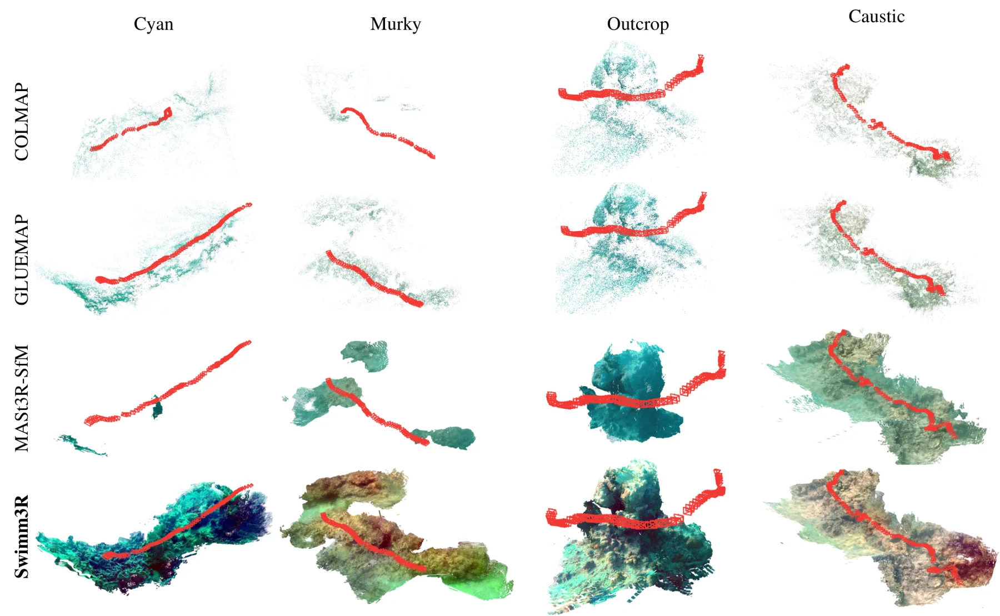
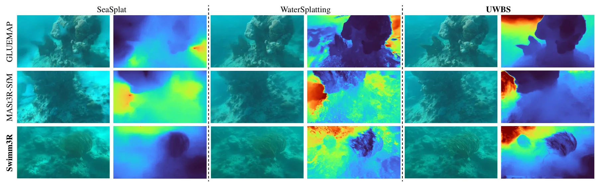
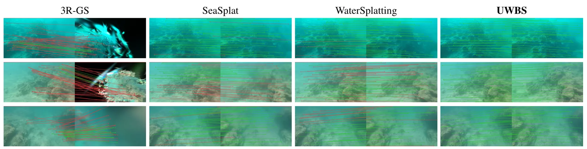
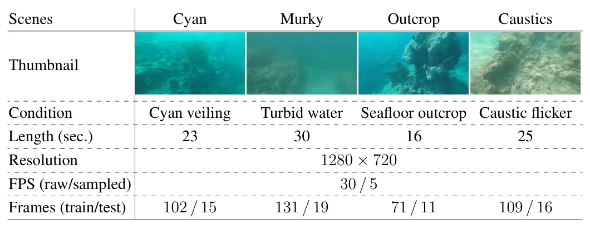
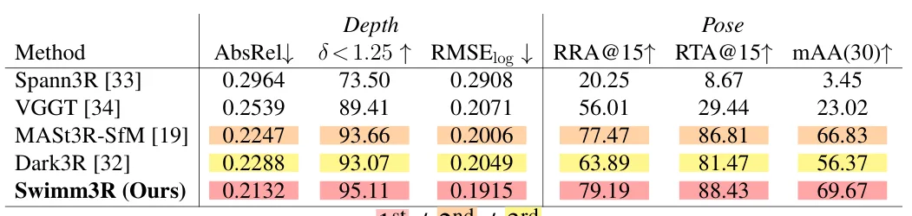
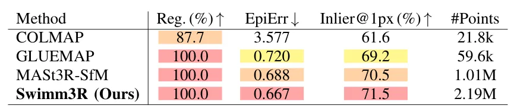
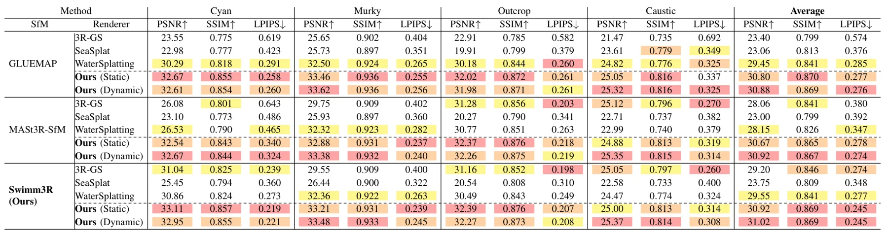
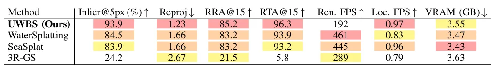
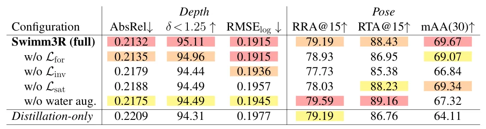

Swimm3R：结合介质感知 SfM 的水下三维重建 SplattingSwimm3R: Splatting with Medium-aware SfM for Underwater 3D Reconstruction
直接覆盖恶劣介质中的 SfM、位姿恢复、点云与 splatting，并报告重建和定位双重收益；跨水体泛化和变量可观测性仍需核查。
一句话工作总结
把水下成像物理、相机位姿、点云恢复与 Beta Splatting 联合建模，直接针对散射介质中的 SfM 失效。
摘要
Swimm3R 将介质感知 SfM 与 Underwater Beta Splatting 统一起来，处理水下散射和衰减导致的重建失效。方法把空气中几何先验蒸馏到前馈骨干，并以物理 head 回归水下成像参数、相机位姿和恢复点云；Beta primitives 与散射感知几何梯度用于稳定表达水下几何。在 Barbados 水下视频数据集上，相比 WaterSplatting，平均 PSNR 提升 1.47 dB，下游定位的 RRA@15 和 RTA@15 分别提高 2.0 与 2.4 个百分点。
We propose Swimm3R, a unified framework that combines medium-aware structure-from-motion (SfM) with Underwater Beta Splatting to address scattering- and attenuation-induced failures in underwater 3D reconstruction. Swimm3R distills in-air geometric priors into a feed-forward backbone and uses a physics head to regress underwater image-formation parameters, camera poses, and restored point clouds. Additionally, we introduce Underwater Beta Splatting, which extends Gaussian splatting with Beta primitives and scattering-aware geometric gradients for stable underwater geometry representation. We further establish the Barbados underwater video dataset to demonstrate the effectiveness of our method in challenging underwater environments. On this dataset, Swimm3R robustly recovers underwater scene structure under challenging scattering conditions, yielding coherent seafloor geometry. Using these predicted point clouds, the proposed Underwater Beta Splatting improves average PSNR by $1.47$ dB over WaterSplatting while increasing downstream localization performance by $2.0$ and $2.4$ percentage points in RRA@15 and RTA@15, respectively.
中文解读摘录
- 原题：Swimm3R: Splatting with Medium-aware SfM for Underwater 3D Reconstruction
- 作者：Minseong Kweon, Junaed Sattar
- 推荐评分：9.2/10
- 核心方法：把空气中几何先验蒸馏到前馈骨干，并用物理 head 联合回归水下成像参数、相机位姿和恢复点云；随后用带 Beta primitives 与散射感知几何梯度的 Underwater Beta Splatting 表示场景。
- 为何值得看：它不是单纯先增强图像再做 SfM，而是把散射、衰减、位姿和几何放进统一框架。论文报告相对 WaterSplatting 平均 PSNR 提升 1.47 dB，RRA@15/RTA@15 分别提高 2.0/2.4 个百分点；需进一步检查 Barbados 数据集规模、跨水体泛化和绝对尺度。
图表/页面预览

{kind=link}

{kind=link}

{kind=link}

{kind=link}

{kind=link}

{kind=link}

{kind=link}

{kind=link}

{kind=link}

{kind=link}
